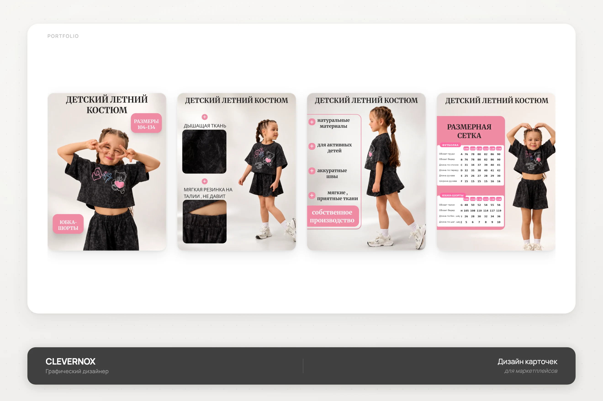
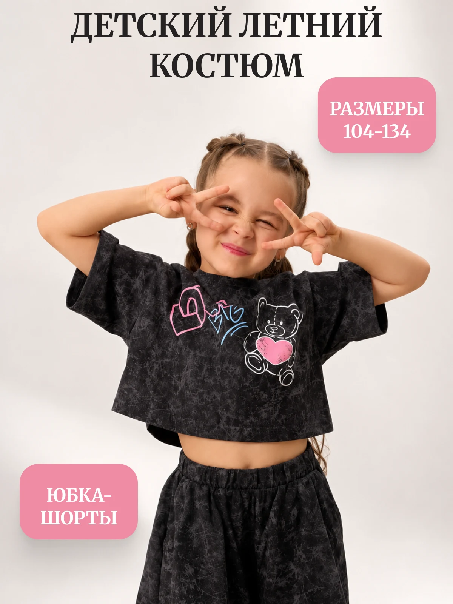
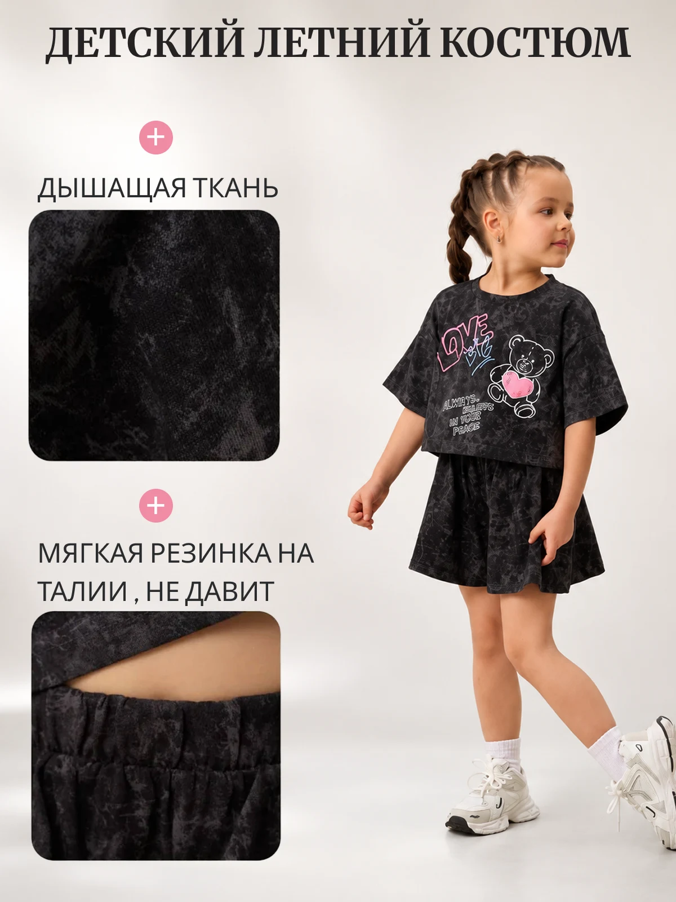
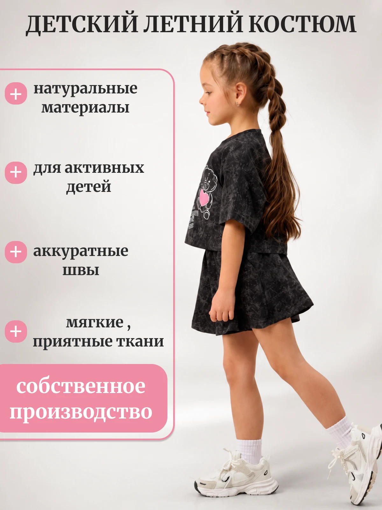
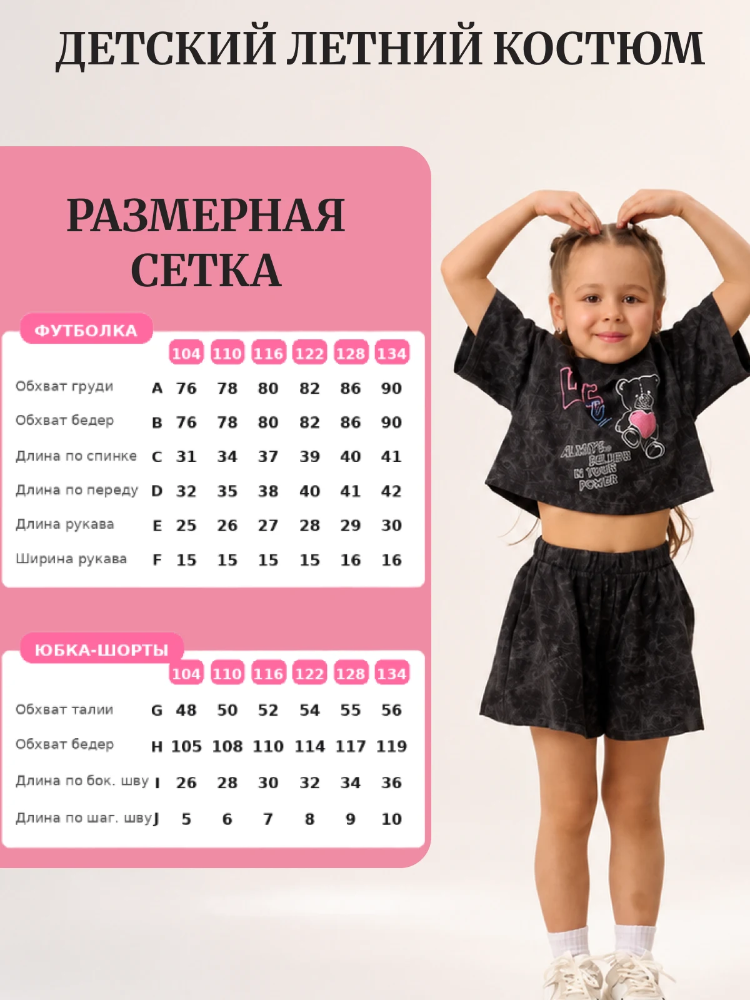

Детский летний костюм
Серия инфографических карточек для детского летнего костюма: продукт на модели, детали ткани, преимущества и размерная сетка.

- Клиент
- Производитель детской одежды (собственное производство)
- Задача
- Разработать серию карточек товара для маркетплейса под детский летний костюм (футболка + юбка-шорты): главный слайд с размерами, детали ткани и посадки, преимущества и размерную сетку — в едином светлом стиле с розовым акцентом.
- Роль
- Графический дизайнер: концепция серии, инфографика, типографика, работа с размерной таблицей, компоновка предметной и модельной съёмки, подготовка под формат карточек маркетплейса.
Детская одежда на маркетплейсе продаётся через два одинаково важных слоя: эмоцию (ребёнок в кадре, живая мимика) и рациональные данные (размеры, состав, посадка) — родитель редко покупает вслепую и почти всегда сверяется с таблицей перед заказом. Задачей было не разносить эти слои по разным местам, а держать их в одной последовательности карточек.
Первая карточка отрабатывает эмоцию и сразу закрывает базовый вопрос — диапазон размеров и состав комплекта (юбка-шорты, а не юбка). Вторая переходит к тактильным деталям — крупный кадр ткани и резинки на поясе, это то, что нельзя пощупать на маркетплейсе, но можно показать крупным планом. Третья — список преимуществ через собственное производство и качество пошива. Четвёртая — самая функциональная: полная размерная сетка отдельно на футболку и на юбку-шорты с буквенными обозначениями точек замера, чтобы родитель мог сверить с ребёнком без примерки.




Серия карточек последовательно закрыла вопросы родителя от эмоционального впечатления до точных размеров, снизив число обращений в поддержку по посадке и составу комплекта.